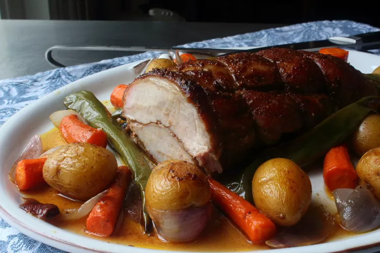

Moroccan-Spiced Pork Roast
By John Mitzewich

Serving a gorgeous, fancy-looking holiday roast doesn't have to be complicated, time-consuming, or expensive.
This pork loin proves exactly that. This is fast, easy, and affordable, but when you bring it to the table, it looks like a million dollars.
The beautifully warming and aromatic spices really work so well with a pork roast - I hope you give it a try soon!
Ingredients
Yields 12 servings
Pork Roast
- "1 (3 lb) boneless pork loin roast"
- "5 tsp kosher salt"
- "2 tbsp olive oil"
Moroccan Spice Rub
- "2 tsp ground cumin"
- "1 tsp ground coriander"
- "1 tsp ground ginger"
- "1 tsp freshly ground black pepper"
- "1 tsp smoked paprika"
- "1/4 tsp cayenne pepper"
- "1/2 tsp ground cinnamon"
- "1/4 tsp ground cloves"
- "1/4 tsp ground allspice"
- "3 tbsp honey, or as needed"
- "8 baby potatoes"
- "2 carrots, cut into 2-inch chunks"
- "2 Anaheim chile peppers, halved and seeded"
- "1 red onion, roughly chopped"
- "2 tbsp olive oil"
- "Salt to taste"
Yogurt Sauce
- "1/2 cup plain Greek yogurt"
- "2 tbsp thinly sliced fresh mint"
- "1 clove garlic, finely crushed"
Steps
- "1. Butterfly the pork loin by cutting almost all the way through, starting on the thinnest side, keeping your knife flat and parallel to the cutting board.
Stop about 1 inch from the opposite edge you started, so that the meat opens up like a book. A few more shallow cuts can be made if the pork is not opening up enough to flatten out, but do not cut all the way through, otherwise you'll end up with two pieces."
- "2. Season the butterflied pork on both sides with kosher salt and let sit out at room temperature for 30 to 45 minutes, or 2 to 3 hours in the fridge."
- "3. Preheat the oven to 350 degrees F (175 degrees C). Grease a roasting pan with 2 tablespoons olive oil. Pat the tenderloin dry with a paper towel."
- "4. Mix cumin, coriander, ginger, black pepper, smoked paprika,cayenne, cinnamon, cloves, allspice, and honey together in a bowl with a spoon.
Spread about half of the spice mixture inside the butterflied pork, fold it back together, and spread the remaining mixture all over the surface. Use 3 or 4 pieces of kitchen string to tie the loin up every few inches, cutting off extra string."
- "5. Toss potatoes, carrots, chile peppers, and onion with olive oil and salt in a bowl."
- "6. Place the pork into the prepared roasting pan and surround with vegetable mixture."
- "7. Roast in the preheated oven until an instant-read thermometer inserted into the thickest part of the loin reads at least 140 to 145 degrees F (60 to 63 degrees C), about 1 hour and 15 minutes.
Remove from the oven and turn roast over with tongs in pan drippings. Transfer to a plate, cover loosely with foil, and let rest for 15 minutes.
- "8. Increase oven temperature to 425 degrees F. Toss vegetable mixture in pan drippings and return to the oven to crisp up, about 10 minutes."
- "9. Combine yogurt, mint, and garlic in a small bowl for sauce."
- "10. Remove strings on roast. Slice, spoon pan drippings over, and serve with vegetables and yogurt sauce."